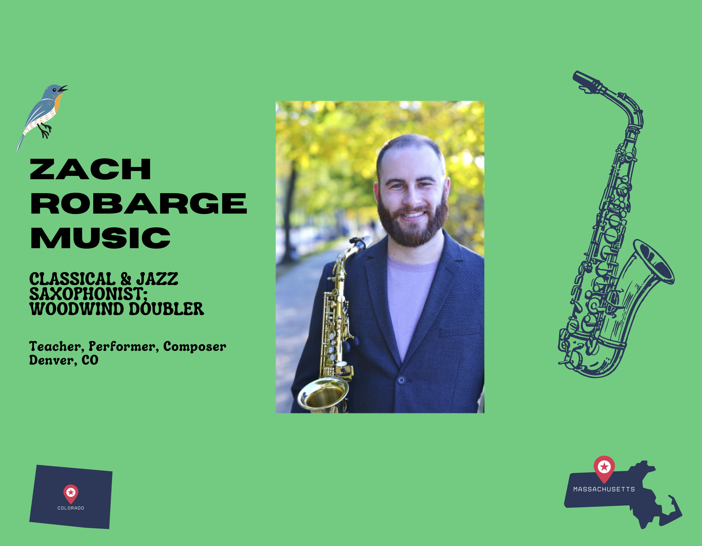

Musician · Educator · Woodwind Doubler
Zach
Robarge
Saxophone, flute, clarinet, oboe & more.
Performing and teaching in Denver, Colorado.
↓
A musician with a wide palette.
Zach Robarge is a woodwind doubler, performer, and educator based in Denver, Colorado.
His work moves between classical performance, jazz, popular music, musical theater, chamber music, and music education. As a doubler, Zach specializes in saxophones, flute/piccolo, clarinets, and oboe.
He holds a Master of Music in Saxophone Performance, a Bachelor of Music in Saxophone Performance and Music Education, and a Performance Certificate in Flute and Oboe Performance from the University of Massachusetts Amherst.
More instruments.
More possibilities.
From theater pits and concert halls to jazz combos and chamber ensembles, Zach brings a broad woodwind toolkit to every project.
Saxophone
Classical · Jazz · ContemporaryFlute
Flute · Piccolo · Alto FluteClarinet
B♭ · Bass · ContrabassOboe
Oboe · English HornTheater · Wind Ensemble · Jazz · Chamber Music

Private lessons that meet you where you are.
Whether you're picking up an instrument for the first time, preparing for an audition, or looking for a new musical challenge, lessons are built around your goals.
Good lessons should build curiosity, confidence, and a lifelong relationship with music.
Let's find a time
to make music.
Choose a lesson time that works for you. If you're not sure which instrument or lesson format is the right fit, get in touch and we'll figure it out together.
Private instruction
Saxophone, flute, clarinet, oboe & musicianship
Denver · Online
Scheduling options shown in the calendar
Calendar goes here.
Connect your Calendly or other scheduling link by editing CALENDAR_URL in the page script.
Master of Music · Saxophone Performance
Bachelor of Music · Saxophone Performance & Music Education
Performance Certificate · Flute & Oboe
More than a decade of teaching students from elementary school through adulthood.
Theater, wind ensemble, jazz, popular music, chamber music, and more.
Let's get
in touch.
Interested in lessons, a performance project, or working together? Reach out.